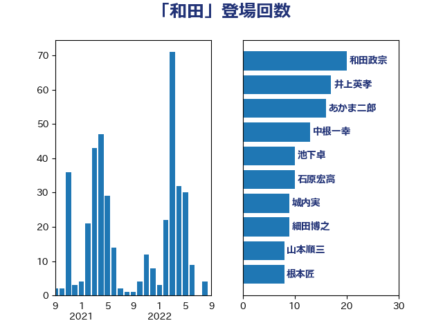

単語「和田」

| 和田政宗 | 自由民主党 | 20 回 |
| 井上英孝 | 日本維新の会 | 17 回 |
| あかま二郎 | 自由民主党 | 16 回 |
| 中根一幸 | 自由民主党 | 13 回 |
| 池下卓 | 日本維新の会 | 10 回 |
| 石原宏高 | 自由民主党 | 10 回 |
| 城内実 | 自由民主党 | 9 回 |
| 細田博之 | 自由民主党 | 9 回 |
| 山本順三 | 自由民主党 | 8 回 |
| 根本匠 | 自由民主党 | 8 回 |
| 石橋通宏 | 立憲民主党 | 8 回 |
| 和田義明 | 自由民主党 | 7 回 |
| 足立康史 | 日本維新の会 | 7 回 |
| 山田宏 | 自由民主党 | 6 回 |
| 赤澤亮正 | 自由民主党 | 6 回 |
| 関芳弘 | 自由民主党 | 6 回 |
| 小池晃 | 日本共産党 | 5 回 |
| 金田勝年 | 自由民主党 | 5 回 |
| 川田龍平 | 立憲民主党 | 4 回 |
| 手塚仁雄 | 立憲民主党 | 4 回 |
| 打越さく良 | 立憲民主党 | 4 回 |
| 柳ヶ瀬裕文 | 日本維新の会 | 4 回 |
| 森屋宏 | 自由民主党 | 4 回 |
| 田中健 | 国民民主党 | 4 回 |
| 金子恭之 | 自由民主党 | 4 回 |
| 馬場成志 | 自由民主党 | 4 回 |
| こやり隆史 | 自由民主党 | 3 回 |
| 和田有一朗 | 日本維新の会 | 3 回 |
| 小泉龍司 | 自由民主党 | 3 回 |
| 山口壯 | 自由民主党 | 3 回 |
| 山東昭子 | 自由民主党 | 3 回 |
| 木原誠二 | 自由民主党 | 3 回 |
| 木村次郎 | 自由民主党 | 3 回 |
| 杉尾秀哉 | 立憲民主党 | 3 回 |
| 林芳正 | 自由民主党 | 3 回 |
| 橋本岳 | 自由民主党 | 3 回 |
| 羽田次郎 | 立憲民主党 | 3 回 |
| 自見はなこ | 自由民主党 | 3 回 |
| 若松謙維 | 公明党 | 3 回 |
| 茂木敏充 | 自由民主党 | 3 回 |
| 西銘恒三郎 | 自由民主党 | 3 回 |
| 上田清司 | 国民民主党 | 2 回 |
| 佐藤信秋 | 自由民主党 | 2 回 |
| 加田裕之 | 自由民主党 | 2 回 |
| 古川元久 | 国民民主党 | 2 回 |
| 古賀友一郎 | 自由民主党 | 2 回 |
| 山田太郎 | 自由民主党 | 2 回 |
| 後藤茂之 | 自由民主党 | 2 回 |
| 徳永エリ | 立憲民主党 | 2 回 |
| 新妻秀規 | 公明党 | 2 回 |
| 早稲田ゆき | 立憲民主党 | 2 回 |
| 松下新平 | 自由民主党 | 2 回 |
| 泉健太 | 立憲民主党 | 2 回 |
| 田村まみ | 国民民主党 | 2 回 |
| 船橋利実 | 自由民主党 | 2 回 |
| 藤丸敏 | 自由民主党 | 2 回 |
| 谷田川元 | 立憲民主党 | 2 回 |
| 豊田俊郎 | 自由民主党 | 2 回 |
| 越智隆雄 | 自由民主党 | 2 回 |
| 青山繁晴 | 自由民主党 | 2 回 |
| 青木一彦 | 自由民主党 | 2 回 |
| 鷲尾英一郎 | 自由民主党 | 2 回 |
| 上野賢一郎 | 自由民主党 | 1 回 |
| 伊波洋一 | 無所属 | 1 回 |
| 原口一博 | 立憲民主党 | 1 回 |
| 大塚耕平 | 国民民主党 | 1 回 |
| 大西健介 | 立憲民主党 | 1 回 |
| 安江伸夫 | 公明党 | 1 回 |
| 室井邦彦 | 日本維新の会 | 1 回 |
| 宮口治子 | 立憲民主党 | 1 回 |
| 宮本徹 | 日本共産党 | 1 回 |
| 小沢雅仁 | 立憲民主党 | 1 回 |
| 小田原潔 | 自由民主党 | 1 回 |
| 小西洋之 | 立憲民主党 | 1 回 |
| 山口俊一 | 自由民主党 | 1 回 |
| 山本左近 | 自由民主党 | 1 回 |
| 山谷えり子 | 自由民主党 | 1 回 |
| 斉藤鉄夫 | 公明党 | 1 回 |
| 杉本和巳 | 日本維新の会 | 1 回 |
| 柚木道義 | 立憲民主党 | 1 回 |
| 森まさこ | 自由民主党 | 1 回 |
| 津島淳 | 自由民主党 | 1 回 |
| 浜口誠 | 国民民主党 | 1 回 |
| 海江田万里 | 立憲民主党 | 1 回 |
| 田名部匡代 | 立憲民主党 | 1 回 |
| 萩生田光一 | 自由民主党 | 1 回 |
| 西村康稔 | 自由民主党 | 1 回 |
| 野田聖子 | 自由民主党 | 1 回 |
| 鈴木宗男 | 日本維新の会 | 1 回 |
| 鈴木敦 | 国民民主党 | 1 回 |
| 長峯誠 | 自由民主党 | 1 回 |
| 青柳仁士 | 日本維新の会 | 1 回 |
| 馬淵澄夫 | 立憲民主党 | 1 回 |
| 高木かおり | 日本維新の会 | 1 回 |
| 高木啓 | 自由民主党 | 1 回 |
| 高木毅 | 自由民主党 | 1 回 |
| 高橋千鶴子 | 日本共産党 | 1 回 |
| 高橋英明 | 日本維新の会 | 1 回 |
| 麻生太郎 | 自由民主党 | 1 回 |